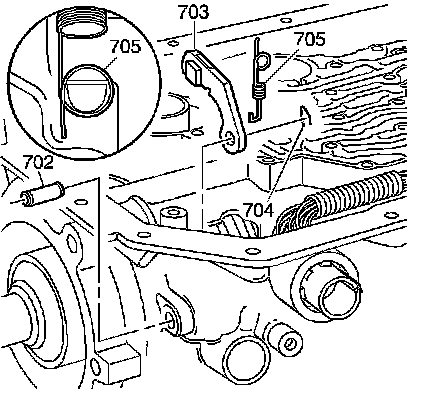
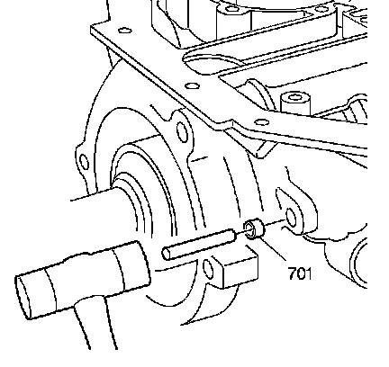
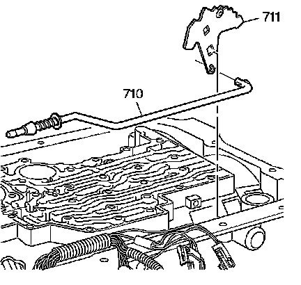
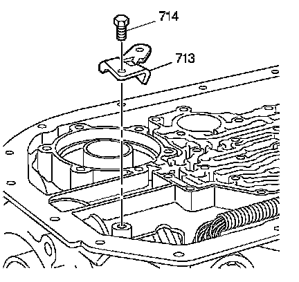

Parking System Components Installation
Parking System Components Installation

1. Install the parking pawl shaft (702) and the parking pawl (703).
2. Install the parking pawl shaft retainer (704).
3. Install the parking pawl spring (705).

4. Apply sealer GM P/N 12345382 or equivalent, to the parking pawl shaft hole plug (701).
5. Using a 5/16 inch diameter rod, install the parking pawl shaft hole plug (701).

6. Assemble the manual shift shaft detent lever assembly (711) to the parking pawl actuator assembly (710).
7. Install the parking pawl actuator assembly (710) over the parking pawl.

8. Install the manual shift shaft seal (707).
9. Partially install the manual shift shaft (708).
10. Install the manual shift shaft detent lever nut (712) onto the manual shift shaft (708).
11. Fully install the manual shift shaft (708).
12. Install the manual shift shaft pin (709) onto the manual shift shaft (708).
Notice: Refer to Fastener Notice.
13. Tighten the manual shift shaft detent lever nut (712).
Tighten the nut to 24 N.m (18 lb ft).

14. Install the parking pawl actuator bracket (713).
15. Install the parking pawl actuator bracket bolts (714).
Tighten the bolts to 24 N.m (18 lb ft).